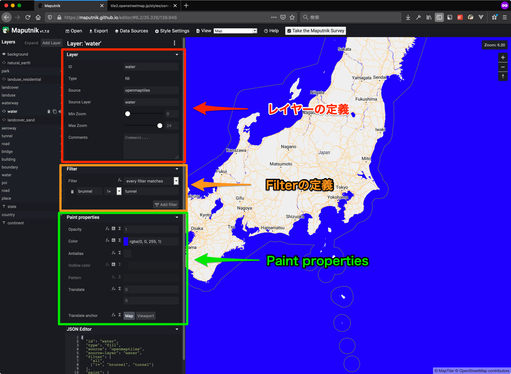

Maputnikによるベクトルタイルのデザイン編集
ベクトルタイル(Mapbox Vector Tile)及びtileserver-glではMapbox GL Styleを使って地図のデザインを行います。
Mapbox GL Styleに対応したエディタではMapbox社のMapbox Studioが有名ですが、 こちらはWebサービスとして提供されているものとなり、自分たちで作成したタイルをトップに選択できないという制限があります(旧バージョンであればホストすることができます)。
そのため、今回はMapbox StudioのOSSクローンであるMaputnikとOpenMapTilesを例に説明をします。
Maputnikについて
Maputnik自体はReactを使ったシングルページアプリケーションとして構築されています。
そのため、ローカル内で動作をさせる方法もありますが、今回は OpenMapTiles が公開してるMaputnikのサイトを使います。
https://maputnik.github.io/editor/
なお、ローカル内での動作方法については Maputnik-CLI の使い方を参照してください。
https://github.com/maputnik/editor/wiki/Maputnik-CLI
今回利用するOpenMapTilesの設定について
今回はOSMFJが運用するサーバ、https://tile2.openstreetmap.jp/をターゲットとします。
運用上停止や、ドメインの変更の可能性がありますのでご注意ください。
自身で運用するものを対象とする場合、以下の項目を自分のサーバに置き換えてください。
- TileJSON URL
- Sprite URL
- Glyphs URL
Maputnikの基本
新規ファイル作成
新しいデザインを作成する場合はまず最初にベースとするデザインファイルをGallery Stylesの中から選択して開きます。
なお、この時に3Dを含むデザインファイル(現在ではOSM Liberty)を使わないようにしてください。
3Dの表現を含んでいる場合、tileserver-glでのレンダリングで問題が生じる可能性があります。
今回はGalleryからKlokantech Basicを選びます。
次に地図を日本の場所に移動したあとに画面上部の Sources タブを選択して、 Sources のダイアログを出します。
ここで、 #openmaptiles に対する TileJSON URL をベクトルタイルサーバを参照するように設定します。
TileJSON URLはベクトルタイルサーバのトップからURLをコピーします。
今回利用するTileJSON URLは https://tile2.openstreetmap.jp/data/japan.json となります。
入力を終えたらタブを押すと即時に変更が反映されます。
次に、フォントとスプライトを変更します。
画面上部の Style Settings を選択し、 Style Settings のダイアログを出します。
ここでは Sprite URL と Glyphs URL の二箇所を書き換えます。
なお、アイコンを利用しない場合は Sprite URL は利用しません。
現状では以下の設定が可能です。
Sprite URL
: https://tile2.openstreetmap.jp/styles/osm-bright/sprite
Glyphs URL
: https://tile2.openstreetmap.jp/fonts/{fontstack}/{range}.pbf
これで初期設定が完了です。
あとは一度この段階でスタイルファイルのダウンロードをします。
画面上部の Export を選択し、 Export Style のダイアログを出します。
ここではスタイルファイルのダウンロードが可能になっています。
Downloadを押してJSONファイルをダウンロードします。
Mapbox GL Styleの基本
Mapbox GL StyleはJSON形式のファイルとなります。
https://docs.mapbox.com/mapbox-gl-js/style-spec/
Root要素
Mapbox GL Styleでは最初にRoot要素を決定します。
重要となる要素は以下のものです。
version : Mapbox GL StyleのSpecificationのバージョンを指します
name : スタイルの名称を指定します
sources : スタイルファイルが参照するデータソースを指定します。データソースは複数指定可能です。
glyphs
: スタイルファイルが参照するフォントのURLを指定します。詳細は後述する Glyphs URL について を参照してください。
sprite
: スタイルファイルが参照するアイコンのスプライトのURLを指定します。詳細は後述する Sprite URL について を参照してください。
layers : 後述するレイヤーを複数指定します。Maputnikでは主にこのレイヤーの編集を行います。
レイヤー
今回利用するOpenMapTiles及びMapbox GL Styleの組み合わせでは、 OpenMapTilesが提供してるスキーマに沿ったレイヤーごとにデザインをする仕組みになります。
レイヤーは概ね以下のものから構成されます。
ID : レイヤーのID値、他と重複してはいけない
Type
: Background(背景), Fill(ポリゴン), Line(ポリライン), Symbol(POIなどのポイント), Raster(ラスタデータソース), Circle(円), Fill-extrusion(噴出したFill、3Dで利用)のいずれか
Source
: データの元となるソース、今回は openmaptiles に固定
Source Layer : Sourceに指定したソースの中でレイヤーが利用するデータのレイヤー
Min zoom : 表示される最小のズーム
Max zoom : 表示される最大のズーム
また、これから以下のものを組み合わせて表示を行います。
Filter : Source Layerで指定した中でレイヤーが使う条件となる式(複数設定可能)
Paint Properties : レイヤーをどのように描画するか指定するプロパティ
Layout Properties
: レイヤーをどのように表示するか指定するプロパティ(Line及びSymbolのみ)
例えば、水を真っ青で表現した場合は以下のようになります。

また、JSONでは以下のように表現されます。
{
"id": "water",
"type": "fill",
"source": "openmaptiles",
"source-layer": "water",
"filter": [
"==",
"$type",
"Polygon"
],
"paint": {
"fill-color": "rgba(0, 0, 255, 1)"
},
"layout": {}
}
なお、JSON上での表現ではPaint propertiesは paint、
Layout propertiesは layout と表現されますが、
Maputnik上ではtypeがSymbolの場合は、
これらのpropertiesを General layout properties、
Text layout properties、Icon layout properties、
Text paint properties、Icon paint propertiesと
わかりやすく項目を分けるようになっています。
また、typeごとにPaint propertiesとLayout propertiesの順番が変わり、
またLayout propertiesの表示が無いものもあります。
Filter
FilterではSource Layerに対して演算子を用いたフィルタリングを行う機能となります。
railway というIDのレイヤーについて見ていきます。
{
"id": "railway",
"type": "line",
"source": "openmaptiles",
"source-layer": "transportation",
"filter": ["==", "class", "rail"],
"layout": {"visibility": "visible"},
"paint": {
"line-color": "hsl(34, 12%, 66%)",
"line-opacity": {
"base": 1,
"stops": [[11, 0], [16, 1]]
}
}
}
railway は transportation という Source Layerを参照していますが、
transportation自体にはclass というフィールドに多くのvalueが存在しています。
https://openmaptiles.org/schema/#transportation
現状ではtransportationには以下のものが存在しています。
- motorway
- trunk
- primary
- secondary
- tertiary
- minor
- service
- track
- path
- raceway
- motorway_construction
- trunk_construction
- primary_construction
- secondary_construction
- tertiary_construction
- minor_construction
- service_construction
- track_construction
- path_construction
- raceway_construction
- rail
- transit
- cable_car
- gondola
- ferry
- bridge
- pier
このうち電車の線路は rail が相当します。
そのため、フィルタは以下のようになります。
"filter": [
"==",
"class",
"rail"
],
Filter 自体は 演算子, filed, value という並びの配列として表現されます。
なお、このフィルタは以下の表現の省略系となります。
"filter": [
"all",
[
"==",
"class",
"rail"
]
],
フィルタはデフォルトでは all が指定されていて、これはすべてのフィルタがマッチするという表現になります。
では、このレイヤーをコピーして、橋になっている部分のみ適応するようフィルタを拡張してみます(レイヤー操作については後述します)。
まず、右下のAdd filterを選択します。すると、Filterが一行追加されます。
ここで、 fieldに brunnel を、 value に bridge を、 演算子 は == を指定します。
Filterが適応されているレイヤーを確認するには画面上部のInspect Modeを選択してMap ModeからInspect Modeへと切り替えます。
上記の操作では以下のようにbridgeのものだけが参照されるよう変化しているのがわかります。

このようにFilterを使うケースではInspect Modeでの確認を頻繁に行います。
Filterで用いられるschemeは下記サイトを参照してください。
https://openmaptiles.org/schema/
演算子については Mapbox GL Style の Specification を参照してください。
https://docs.mapbox.com/mapbox-gl-js/style-spec/types/#filter
レイヤーの順序及び操作
レイヤーは一番左に並んでいます。
上にあるレイヤーから順番にレンダリングをしていくため、Adobe PhotoshopやAdobe illustratorのレイヤーとは逆の並びになるのに注意してください。
例えば、waterというレイヤーを一番下に持っていくと橋を表現した道路よりも上位になってしまうため、橋がレンダリングされないということになります。
各レイヤーには次のように操作が可能となっています。
レイヤーの削除、コピー、表示非表示切り替え
レイヤーの削除ボタン(ゴミ箱のアイコン)は選択しているレイヤーを削除します。 確認などがないため、操作をする時には気をつけてください。 なお、レイヤーは削除するのではなく非表示で代用するという手もあります。
レイヤーのコピーボタン(レイヤーが重なっているアイコン)は選択しているレイヤーを複製します。
複製後のレイヤーは複製したレイヤーの上に配置されますが、
グループ化されていないレイヤーを複製した際には即座にグループ化されます。
また、複製後のレイヤーはIDの重複を防ぐために -copy というsuffixが追加されます。
レイヤーの表示非表示切り替えボタン(目のアイコン)では単に表示と非表示を切り替えます。
レイヤーが表示から非表示になった場合は、Layout Propertiesに "visibility": "none" という値が設定されます。
逆に非表示から表示になった場合は、Layout Propertiesに "visibility": "visible"という値が設定されます。
なお、"visibility": "visible"はデフォルト値です。
レイヤーの順番操作
レイヤーの順番を操作するにはレイヤーの左にあるアイコンをクリックしたまま上下に動かして、 挿入したい場所に移動させます。
この時に同じSource Layerが参照されているものが上下に並ぶと自動的にグループ化されます。
また、グループ内に２つしかレイヤーがないレイヤーを違うSource Layerの間に移動させるとグループ化が解除されます。
なお、一部のレイヤーが上下に動かせないという現象があります。 その場合はレイヤーを複製してから複製したレイヤーを動かし、その後元のレイヤーを非表示にするなどしてください。
Layout Properties 及び Paint Properties
Layout Properties は Line 及び Symbol でレイヤーの編集画面で編集が可能です。
ただし、仕様においては全てのtypeでvisibleという表示非表示を選択するpropertyがあり、
このpropertyのみレイヤー自体の操作(後述)で扱います。
Paint Propertiesの基本項目
Paint Propertiesでは以下の項目は多くのところで共通で指定可能です。
Color : 色指定。RGBのHEX表記(#99EEBBなど)やhsl表記(hsl(210, 67%, 85%))、hsla表記(hsla(0, 0%, 89%, 0.56))が可能です。
Pattern : 塗りつぶす画像を指定。指定可能なものはSpriteの名前を用います。
Opacity : 透明度。1が100%(不透明)で0が0%(透明)です。
これらは共通なので以下では一部説明を省略します。
では、以下ではそれぞれのtypeごとに利用可能なPropertiesについて説明します。
type: Background
Backgroundは背景を指定します。
https://docs.mapbox.com/mapbox-gl-js/style-spec/#layers-background
以下のPaint Properitesが利用可能です。
Background の Paint Properites の 一覧
| プロパティ名 | Mapbox GL Style | 値 | デフォルト値 | 説明 |
|---|---|---|---|---|
| Color | background-color | 色指定 | #000000 |
背景色、Patternが指定されると無効になる |
| Pattern | background-pattern | 文字列 | なし | 背景の塗りつぶしのパターンに使う画像を指定 |
| Opacity | background-opacity | 数字 | 1 |
背景の透過度 |
Backgroundは特にFilterなどを指定せずに使います。 また、レイヤーは一番上にもっていきます。
type: Fill
Fill はポリゴンの塗りつぶしをします。
建物(building)や水(water)、緑(landcover_wood)などに利用されます。
https://docs.mapbox.com/mapbox-gl-js/style-spec/layers/#fill
以下のPaint Propertiesが利用可能です。
Fill の Paint Properites の 一覧
| プロパティ名 | Mapbox GL Style | 値 | デフォルト値 | 説明 |
|---|---|---|---|---|
| Opacity | fill-opacity | 数字 | 1 |
塗りつぶしの透過度 |
| Color | fill-color | 色指定 | #000000 |
塗りつぶしの色、Patternが指定されると無効になる |
| Antialias | fill-antialias | boolean | true |
trueを指定すると塗りつぶしの枠にアンチエイリアスがかかる |
| Outline color | fill-outline-color | 色指定 | 無し | アンチエイリアスを有効した時にアンチエイリアスがかかる部分の塗りつぶしの色を指定する。従って fill-antialias = true でなければならない。Patternが指定されると無効になる |
| Pattern | fill-pattern | 文字列 | 無し | 塗りつぶしのパターンに使う画像を指定 |
| Translate | fill-translate | ピクセルの配列 | [0, 0] |
塗りつぶすときのオフセット座標([x, y])を左上を原点として指定する。主に影をつけるときなどに利用する |
| Translate anchor | fill-translate-anchor | enum (map もしくは viewport) |
map |
上記のトランスレートを map に関連付けるか、 viewport に関連付けるかを指定する。mapの場合は地図を回転させても同じようにずれるが、viewportでは地図を回転させるとそれに合わせてトランスレートが変動する |
type: Line
Lineはポリゴンなどの線を描画する時に利用します。
https://docs.mapbox.com/mapbox-gl-js/style-spec/layers/#line
Lineには以下の4つのLayout Propertiesが存在しますが、
基本的な考え方は SVG 1.1のStroke Propertiesと同じです。
https://triple-underscore.github.io/SVG11/painting.html#StrokeProperties
Line の Layout Properties
| プロパティ名 | Mapbox GL Style | SVG 1.1 | 値 | デフォルト値 | 説明 |
|---|---|---|---|---|---|
| Cap | line-cap | stroke-linecap | enum (butt, round, square) | butt | ストロークの際に、開いた部分パスの両端に利用される形状 |
| Join | line-join | stroke-linejoin | enum (bevel, round, miter) | miter | ストロークされる際に，それらの角（パス区分の継ぎ目）に利用される形状 |
| Miter limit | line-miter-limit | stroke-miterlimit | 数字 | 2 |
line-join=miterの場合に２つのパス区分の継ぎ目が鋭角の場合に line-join を miter から bevel とするための比率 |
| Round limit | line-round-limit | 対応なし | 数字 | 1.05 |
line-join=roundの場合に２つのパス区分の継ぎ目が浅い角度(shallow angle)の場合に line-join を round から miter とするための比率 |
line-round-limitのみSVG 1.1に対応する概念がありません。
Line の Paint properties
Lineで使われるPaint Propertiesは以下のものがあります。
| プロパティ名 | Mapbox GL Style | 値 | デフォルト値 | 説明 |
|---|---|---|---|---|
| Opacity | line-opacity | 数字 | 1 |
線の透過度 |
| Color | line-color | 色指定 | #000000 |
線の色、Patternが指定されてると無効になる |
| Width | line-width | ピクセル | 1 |
線の太さ |
| Offset | line-offset | ピクセル | 0 |
線のオフセット値。線形の地物に対しては線の方向に沿って正の値で右に、負の値で左にずらします。ポリゴンの地物に対しては正の値はinset、負の値はoutsetになります |
| Blur | line-blur | ピクセル | 0 |
線にぼかしを入れる場合のピクセルを指定 |
| Dasharray | line-dasharray | 太さの配列 | なし | ダッシュパターンの配列、点線の描画や、電車の線路などの白黒が交互に配置される線を描画するのに利用 |
| Pattern | line-pattern | 文字列 | なし | Spriteの画像を指定。画像の幅は２の倍数である必要がある |
| Translate | line-translate | ピクセルの配列 | なし | 線のオフセット座標([x, y])を左上を原点として指定する。これも主に影をつけるときなどに利用する |
| Translate anchor | line-translate-anchor | enum (map, viewport) | map |
上記のトランスレートを map に関連付けるか、 viewport に関連付けるかを指定する。mapの場合は地図を回転させても同じようにずれるが、viewportでは地図を回転させるとそれに合わせてトランスレートが変動する |
| Gap width | line-gap-width | ピクセル | 0 |
ラインの実際のパスの外側に枠となる線を描画するときに内側のギャップのサイズを指定する。簡単に二車線道路のようなものを書くことができるが、データと合わないケースになりやすいので注意が必要 |
type: Symbol
Symbol はPOIなどのPointや道路や建物の名前を表示するのに使います。
そのため、POINT, LINESTRING, POLYGONのいずれも利用することができます。
https://docs.mapbox.com/mapbox-gl-js/style-spec/#layers-symbol
また、テキストや画像を使うことができるため、MaputnikではLayout Properties及びPaint Propertiesが細かく分類されているという特長があります。
- Layout properties
- General layout properites
- Text layout properties
- Icon layout properties
- Paint properties
- Text paint properties
- Icon paint properties
以下が利用できる全てのプロパティです。
Symbol の General layout properties 一覧
| プロパティ名 | Mapbox GL Style | 値 | デフォルト値 | 説明 |
|---|---|---|---|---|
| Placement | symbol-placement | enum (point, line) | point |
point の場合、ラベルはジオメトリが配置されているポイントに配置され、 line の場合はラインの座標に沿って配置されます。これは LineString か Polygon のジオメトリのみで利用可能です |
| Spacing | symbol-spacing | ピクセル | 250 |
２つの symbol が配置されている間の距離を指定します |
| Avoid edges | symbol-avoid-edges | boolean | true |
もし true なら、 symbol 同士はお互いが衝突しないようタイルのエッジをクロスしません。これはレイヤーがベクタタイルで衝突を防ぐための十分な padding を持っていないレイヤーまたは point の symbol レイヤーが line の symbol レイヤーのあとに配置される場合に推奨されます。 |
Symbol の Text layout properites の 一覧
| プロパティ名 | Mapbox GL Style | 値 | デフォルト値 | 説明 |
|---|---|---|---|---|
| Field | text-field | 文字列 | なし | テキストラベルに使う値を指定します。地物のプロパティは {field_name} のようなトークンで指定します(トークンによる置換は文字によるテキストフィールドの値のみサポートしています、つまり function は使えません)。 |
| Font | text-font | フォント名の配列 | Open Sans Regular,Arial Unicode MS Regular. |
表示に使うFont stackを指定します |
| Size | text-size | ピクセル | 16 |
フォントサイズ |
| Line height | text-line-height | 数字 (em) | 1.2 |
複数行における行間隔の広さを指定します |
| Padding | text-padding | ピクセル | 2 |
symbol 同士の衝突を防ぐためのテキストの境界の余白となるサイズを指定します |
| Allow overlap | text-allow-overlap | boolean | false |
もし true なら、他の symbol と衝突してもテキストが表示されます |
| Ignore placement | text-ignore-placement | boolean | false |
もし true なら、テキストが衝突しても他の symbol は表示されます |
| Pitch alignment | text-pitch-alignment | enum (map, viewport, auto) | auto |
地図を傾けた時のテキストの方向をしてします。 map を指定した場合はテキストはマップの平面に揃います。 viewport を指定したら viewport の平面に揃います。 auto を指定したら text-rotation-alignment と同じ値を使います |
| Rotation alignment | text-rotation-alignment | enum (map, viewport, auto) | auto |
symbol-placement と組み合わせた場合にテキストを構成している個々のグリフの傾きの挙動を指定します。 map を指定した場合: symbol-placement が point の場合、テキストを東西に揃え、 symbol-placement が line の場合、テキストは X軸 に揃えられます。 viewport を指定した場合: symbol-placement の値に関わらず、グリフは viewport の X軸 に揃えられます。 auto を指定した場合: symbol-placement が point の場合、挙動は viewport を指定したときと同じになり、 symbol-placement が line の場合、挙動は map を指定したときと同じになります |
| Max width | text-max-width | 数字(em) | 10 |
テキストを折り返す最大の横幅を指定します |
| Letter spacing | text-letter-spacing | 数字(em) | 0 |
文字間隔 |
| Justify | text-justify | enum (left, center, right) | center |
テキストの整列方法(left: 左寄せ、 center: 中央寄せ、 right: 右寄せ)を指定します |
| Anchor | text-anchor | enum (center, left, right, top, bottom, top-left, top-right, bottom-left, bottom-right) | center |
テキストの配置位置を指定します |
| Max angle | text-max-angle | 数字(角度) | 45 |
symbol-placement = line の時のみ利用、隣接する文字間で変更される最大の角度を指定します |
| Rotate | text-rotate | 数字(角度) | 0 |
テキストを時計回りに回転させる角度を指定します |
| Keep upright | text-keep-upright | boolean | true |
text-rotation-alignment = map でかつ symbol-placement = line の時のみ利用。 true なら テキストが上下反対にならないように垂直に文字を傾けます |
| Transform | text-transform | enum (none, uppercase, lowercase) | none |
テキストを大文字小文字に統一するかどうかを指定します。これは CSS の text-transform と同様の仕組みです |
| Offset | text-offset | ピクセルの配列 | 0,0 |
テキストを中心地点からずらすオフセットを指定します。正の数は右下にずらし、負の数は左上にずらします |
| Optional | text-optional | boolean | false |
icon-image が必要です。 もし true ならテキストが他の symbol のテキストと衝突してアイコンが衝突していない場合、テキストなしでアイコンだけ表示します(テキストをオプション扱いにします) |
Symbol の Icon layout properites の 一覧
| プロパティ名 | Mapbox GL Style | 値 | デフォルト値 | 説明 |
|---|---|---|---|---|
| Allow overlap | icon-allow-overlap | boolean | false |
もし true なら、前に描画されている symbol があってもアイコンを表示します |
| Ignore placement | icon-ignore-placement | boolean | false |
もし true なら、アイコンが衝突したときに他の symbol を表示します |
| Optional | icon-optional | boolean | false |
text-field がある必要があります。もし true なら、他の symbol のアイコンと衝突してかつテキストは衝突しなかった場合、アイコンなしでテキストだけ表示をします(アイコンがオプション扱い) |
| Rotation alignment | icon-rotation-alignment | enum (map, viewport, auto) | auto |
symbol-placement と組み合わせた場合にアイコンの傾きの挙動を指定します。 map を指定した場合: symbol-placement が point の場合、アイコンを東西に揃え、 symbol-placement が line の場合、アイコンはラインの X軸 に揃えられます。 viewport を指定した場合: symbol-placement の値に関わらず、アイコンは viewport の X軸 に揃えられます。 auto を指定した場合: symbol-placement が point の場合、挙動は viewport を指定したときと同じになり、 symbol-placement が line の場合、挙動は map を指定したときと同じになります |
| Size | icon-size | 数字 | 1 |
与えられた倍数を元にアイコンのオリジナルサイズから拡大します。新しい画像のピクセルのサイズは icon-size によって乗じます。 1 はオリジナルのサイズ、 3 は 3倍のサイズになります |
| Text fit | icon-text-fit | enum (none, width, height, both) | none |
text-field が必須です。アイコンを関連付けられたテキストに合わせて拡大します。 none ではアイコンは元のアスペクト比で表示されます。 width では テキストの X軸の大きさに合わせて拡大します。 height はテキストの Y軸に合わせて拡大します。 both は X軸とY軸の両方の大きさで拡大します。 |
| Text fit padding | icon-text-fit-padding | ピクセルの配列 | 0,0,0,0 |
text-field が必須でかつ、icon-text-fitが none でない必要があります。icon-text-fit で拡大したサイズの余白を時計回り (top, right, bottom, left) に指定します |
| Image | icon-image | 文字列 | なし | 描画する Sprite の画像の名前を指定します。{tokens} はデータプロパティから取得する際の参照として使われます |
| Rotate | icon-rotate | 角度 | 0 |
画像を時計回りに回転させる角度を指定します |
| Padding | icon-padding | ピクセル | 2 |
アイコンが衝突するかどうかを判断する余白の大きさを指定します |
| Keep upright | icon-keep-upright | boolean | false |
icon-rotation-alignment が map でかつ symbol-placement = line である必要があります。 もし true なら、 アイコンが上下反対にならないよう垂直にアイコンを傾けます |
| Offset | icon-offset | ピクセルの配列 | 0,0 |
中心地点からアイコンのオフセットの距離を指定します。正の数であれば右下に移動、負の数なら左上に移動します。 icon-rotate を組み合わせた場合、 回転した方向の向きにオフセットします |
Symbol の Text paint properties の 一覧
| プロパティ名 | Mapbox GL Style | 値 | デフォルト値 | 説明 |
|---|---|---|---|---|
| Color | text-color | 色 | #000000 |
テキストの色 |
| Opacity | text-opacity | 数字 | 1 |
テキストの透過度 |
| Halo color | text-halo-color | 色 | rgba(0, 0, 0, 0) |
テキストの囲う色、これは背景から見やすくするために使われます |
| Halo width | text-halo-width | ピクセル | 0 |
フォントのアウトラインを囲う長さ。最大幅はフォントサイズの四分の一です |
| Halo blur | text-halo-blur | ピクセル | 0 |
テキストの囲いが外側にフェードアウトしていくときの長さを指定します |
| Translate | text-translate | ピクセルの配列 | 0,0 |
テキストの中心位置が初期値からどれだけ移動させるかを指定します。正の数は右下に移動、負の数は左上に移動します |
| Translate anchor | text-translate-anchor | enum (map, viewport) | map |
上記のトランスレートを map に関連付けるか、 viewport に関連付けるかを指定する。mapの場合は地図を回転させても同じようにずれるが、viewportでは地図を回転させるとそれに合わせてトランスレートが変動する |
Symbol の Icon paint properties の 一覧
| プロパティ名 | Mapbox GL Style | 値 | デフォルト値 | 説明 |
|---|---|---|---|---|
| Color | icon-color | 色 | #000000 |
アイコンの色、SDFアイコンのみ利用可能 |
| Opacity | icon-opacity | 数字 | 1 |
描画されたアイコンの透過度 |
| Helo color | icon-halo-color | 色 | rgba(0, 0, 0, 0) |
アイコンの囲いの色を指定します。SDFアイコンのみ利用可能です |
| Helo width | icon-halo-width | ピクセル | 0 |
アイコンのアウトラインを囲う長さ |
| Helo blur | icon-halo-blur | ピクセル | 0 |
アイコンの囲いが外側にフェードアウトしていくときの長さを指定します |
| Translate | icon-translate | ピクセルの配列 | 0,0 |
アイコンの中心位置が初期値からどれだけ移動させるかを指定します。正の数は右下に移動、負の数は左上に移動します |
| Translate anchor | icon-translate-anchor | enum (map, viewport) | map |
上記のトランスレートを map に関連付けるか、 viewport に関連付けるかを指定する。mapの場合は地図を回転させても同じようにずれるが、viewportでは地図を回転させるとそれに合わせてトランスレートが変動する |
テクニック
ズームレベルごとの処理(function)
線やテキストなどはズームインをすると拡大するように設定するのが一般的です。
Mapbox GL Styleではズームレベルごとにプロパティを設定することでこの動作を実現します。
Mapbox GL Styleではこの仕組みを function と定義しています。
https://docs.mapbox.com/mapbox-gl-js/style-spec/types/#function
Klokantech Basicの road_trunk_primary では line-width の値を以下のように設定しています。
"line-width": {
"base": 1.4,
"stops": [
[
6,
0.5
],
[
20,
30
]
]
}
stops がズームレベルごとの大きさを指す配列となり、 [zoom, value] と表現しています。
また、上記の例ではズームレベルが6の時に 0.5 pixel の幅に、ズームレベルが20の時に 30 pixel の幅になるように設定されています。
ズームレベルが7以上20未満の間は 0.5 〜 30 pixel の間を値になるようになります。
なお、ベクトルレンダリングでのズームレベルは切り捨てとなるため、ズームレベル 6.6 などでも 0.5 pixel を維持します。
ただし、ラスタレンダリングの場合はズームレベルで小数点がないため、単純に間の数字になるとだけ考えてください。
base はズームレベルごとの増加の割合を設定する指数関数の基底を設定します。
上記の例で 1 を設定するとズームレベルが7になった段階で幅が 30 pixel になります。
逆に 2 を設定するとなかなか幅が広くならず、ズームレベル20に近づいてやっと広くなるような形になります。
1.4 という値は比較的なめらかにズームをする値になります。
では、この作業をMaputnikで行います。
今回は Klokantech Basicの路線の表示である railway を対象に行います。
まず、Paint properties の Width の左にある Σ を選択します。
選択をすると以下のように stops が追加されます。
この値を変更していくのですが、入力時に値の検証が即時にされるため、高いズームレベルから編集をしていきます。
- zoom 10: value 1
- zoom 16: value 3
これで線の幅が 1 〜 3 pixel になるようになりましたが、 base の値はUIから追加や編集はできません。
そのため、JSONを直に編集する必要があります。
これで路線が滑らかに拡大するようになります。
fill-translateによる2Dでの影付け
fill-translate の説明で影付けで使われるオプションであると紹介しましたが、実際にbuildingで利用する例を紹介します。
手順は以下のようになります。
- buildingのレイヤーをコピーして、buildingの１つ下のレイヤーに配置をする。この時building-shadowなどわかりやすいIDを付けておく
- building-shadowのColorを元の色よりも濃い目にする
- building-shadowのTranslateでx, yを2か3ぐらいの値を入力する
Translateの値をあまり大きくしないのがポイントです。何故なら余り離れてしまうと影としては不自然に見えてしまうからです。
line-dasharrayによるゼブラ模様の作成
line-dasharray は行政区を表現するための点線によく使われる表現ですが、工夫をすると線路のゼブラなどを実現することができます。
今回は Klokantech Basicの路線の表示である railway を対象に行います。
実際の作業は以下の手順で行います。
railwayを複製して、複製したレイヤーが下に(つまりMaputnik上では上に)配置されるようにする- 複製したレイヤーの
Widthに4をセット - 元のレイヤーの
Widthに2をセット - 元のレイヤーの
Colorに白い色をセット - 元のレイヤーの
DasharrayのAdd Valueを二回押す(２つの配列が作成される) - それぞれの
Dasharrayに2をセット
ポイントは先にレンダリングされるレイヤーの幅を長くして、次に幅が短いレイヤーを重ねることです。
なお、これに似たような方法としてDasharrayを設定せずに線を重ねて特長のある線を表現するという方法があります。